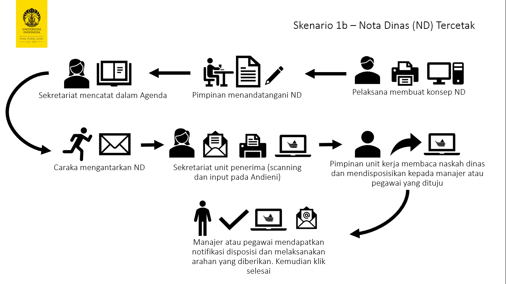
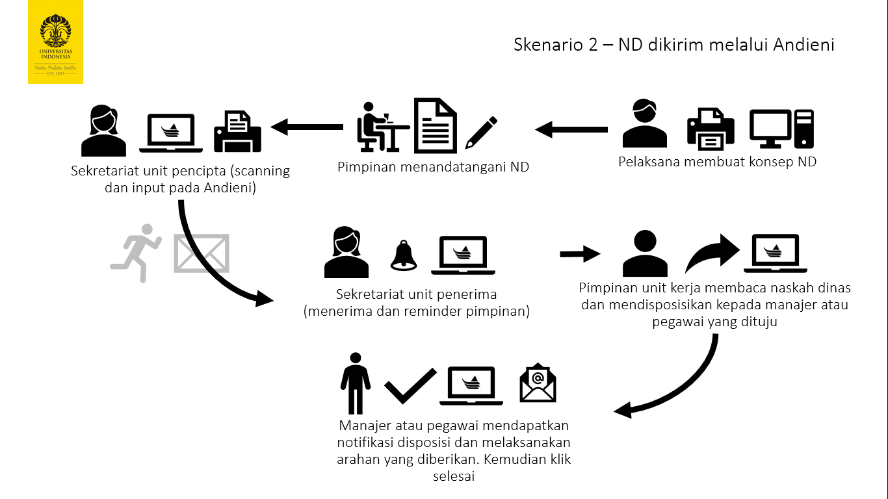
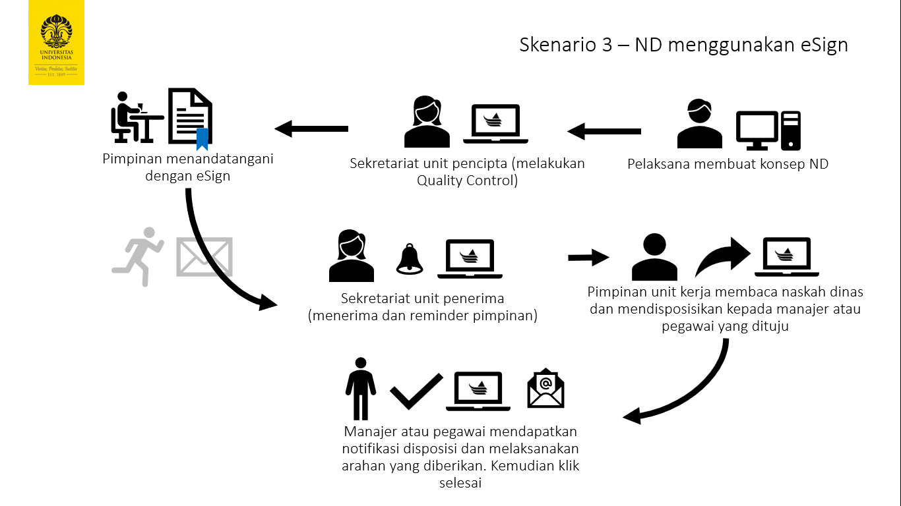
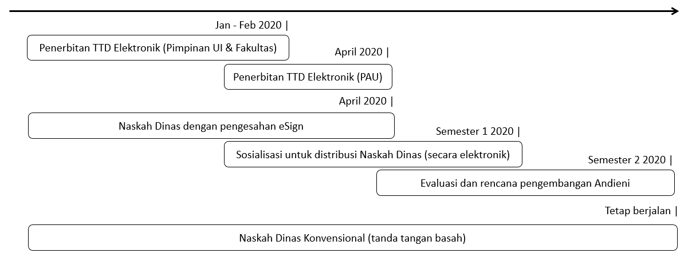

Transisi Penggunaan Andieni¶
Andieni dapat digunakan pada beberapa skenario transisi berikut :
Agenda surat di unit kerja
Distribusi nota dinas di lingkungan UI
Naskah Dinas Elektronik dengan eSign
1. Agenda Surat¶
Pada skenario ini, kasus yang terjadi adalah unit anda menerima surat dari unit kerja lain secara fisik, kemudian anda (sebagai sekretaris) melakukan proses alih media (scanning) dan input nota dinas tersebut di andieni.
2. Distribusi ND¶
Unit kerja di lingkungan UI, menciptakan nota dinas dengan tanda tangan basah (konvensional) kemudian untuk mempercepat distribusi naskah maka dikirimkan melalui media elektronik file digital dari nota dinas tersebut. Media elektronik resmi dalam distribusi naskah dinas di lingkungan UI adalah andieni sebagaimana tercantum dalam Keputusan Rektor Nomor 2635/SK/R/UI/2019 tentang Aplikasi Naskah Dinas Elektronik Universitas Indonesia.
Maka unit anda tidak perlu melakukan input data pada agenda surat, karena data tersebut telah diinput oleh unit pencipta naskah melalui Andieni.
3. Naskah Dinas Elektronik (eSign)¶
Pada kasus kali ini segala aktifitas administrasi dilakukan secara digital, tidak diperlukan lagi tindakan cetak (baca: print), alih media (scan), dan penandatanganan dokumen dilakukan secara digital.
Timeframe Implementasi¶
Kantor Arsip sebagai pengampu penerapan naskah dinas elektronik telah merencanakan tahapan penggunaan Naskah Dinas Elektronik di lingkungan UI sebagai berikut
